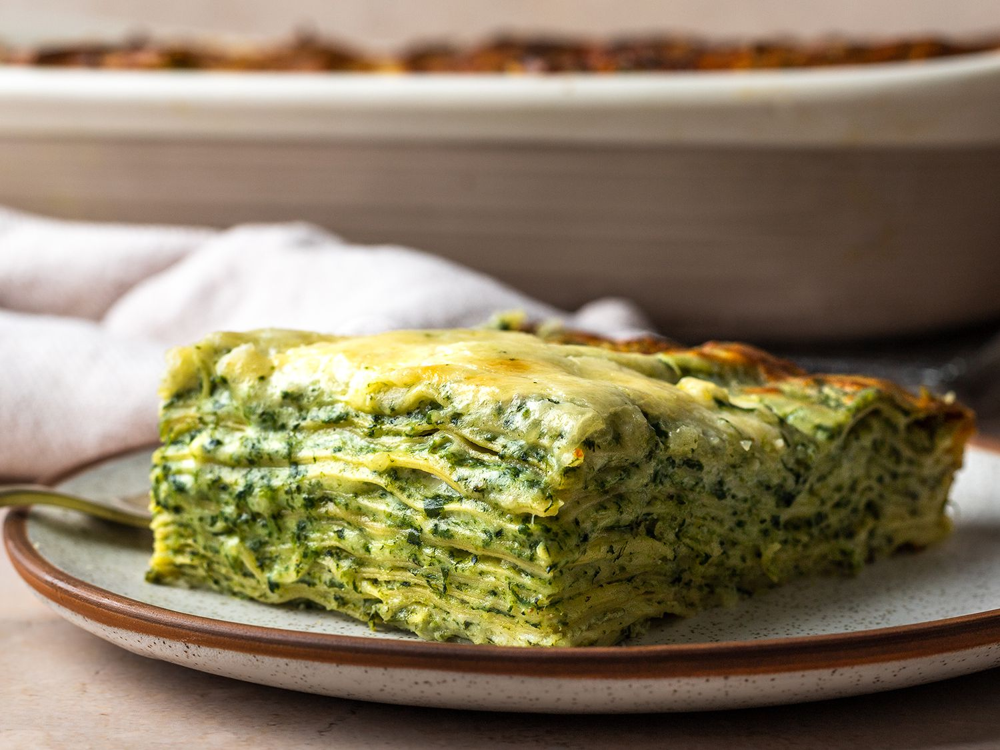

Spinach Lasagna

This is the ultimate creamy, cheesy, spinach lasagna.
This recipe works because sautéing the spinach instead of blanching or microwaving it
improves flavor, while chopping allows you to evenly incorporate it into every bite.
A mixture of smoothly processed ricotta and ricotta that hasn't been in the food processor
gives the lasagna a creamy flavor while still maintaining the classic small curds of ricotta
in the finished dish. Stacks and stacks of fresh pasta make this dish about the pasta, not just the fillings.
Ingredients
For the spinach:
- 2 tablespoons butter, divided
- 2 tablespoons extra virgin olive oil
- 1 shallot, finely minced (about 1/2 cup)
- 6 medium garlic cloves, minced (about 2 tablespoons)
- Kosher salt and freshly ground black pepper
- 2 pounds fresh flat or curly spinach leaves, washed and dried
For the ricotta:
- 2 pounds fresh ricotta cheese(see note)
- 2 large eggs
- 4 ounces finely grated Parmigiano Reggiano cheese
- 1 teaspoon freshly grated nutmeg
For the white sauce:
- 4 tablespoons butter
- 1/4 cup flour
- 1 quart (4 cups) whole milk
- 12 ounces grated low moisture mozzarella cheese
- 12 ounces grated Comté, Gruyère, or Emmentaler cheese
For the assembly:
- 1 1/2 pounds (enough sheets to make 12 layers) fresh lasagna noodles
Directions
- For the Spinach: Heat olive oil and butter in a large saucepan over medium heat until melted.
Add shallots and garlic, season with salt and pepper, and cook, stirring frequently,
until softened and fragrant, about 1 minute. Add a few large handfuls of spinach and cook,
stirring, until wilted. Continue adding spinach a handful at a time until it is all in the pot.
Cook, stirring frequently, until spinach expels its moisture and most of that moisture evaporates,
leaving a dry bottom as you stir. Season to taste with salt and pepper.
- Transfer spinach to a fine mesh strainer set over the sink
and press out excess moisture with a rubber spatula.
Let spinach continue to drain as you prepare the ricotta mixture.
- For the Ricotta: Transfer half of the ricotta, both eggs, the Parmesan, and the nutmeg to the bowl of a food processor.
Season with salt and pepper. Process until completely smooth, about 1 minute.
- Transfer mixture to a large bowl but do not wipe out food processor. Transfer spinach to food processor and
pulse until finely chopped, 10 to 12 short pulses.
Add spinach and remaining ricotta to the ricotta mixture and fold gently to combine.
- For the White Sauce: Heat butter in a medium saucepan over medium heat until melted.
Add flour and increase heat to medium high. Cook, stirring butter and flour with a whisk until paled golden blond,
about 1 minute. Whisking constantly, slowly drizzle in milk. Continue to cook, whisking frequently, until
mixture comes to a boil and thickens. Remove from heat and add 3/4 of mozzarella and Comté, Gruyère, or Emmenthale cheese.
Whisk until smooth. Season to taste with salt and pepper.
- To Assemble: Adjust oven rack to lower middle position and preheat oven to 400°F.
Bring a large pot of salted water to a boil. Add pasta sheets a few at a time and cook until barely tender, about 45 seconds.
Transfer to a fine mesh strainer and run under cool water until well chilled.
Transfer to a clean kitchen towel in a single layer. Continue until all pasta is par-cooked and dried.
- Drizzle a small amount of white sauce over the bottom of a lasagna pan or large casserole. Add a layer of noodles.
Top with 1/12th of spinach mixture and 1/12th of remaining white sauce.
Continue layering pasta, spinach, and white sauce until you lay down the top sheet of pasta.
- Spread remaining spinach mixture evenly over the top. Sprinkle with remaining mozzarella and Comté or
Emmentaler cheese and drizzle with remaining white sauce.
Spread into an even layer with a rubber spatula.
- Cover tightly with aluminum foil. Bake for 20 minutes. Remove foil and continue baking until bubble and lightly browned,
about 20 minutes longer.
Let rest at room temperature for 5 to 10 minutes, then slice and serve.